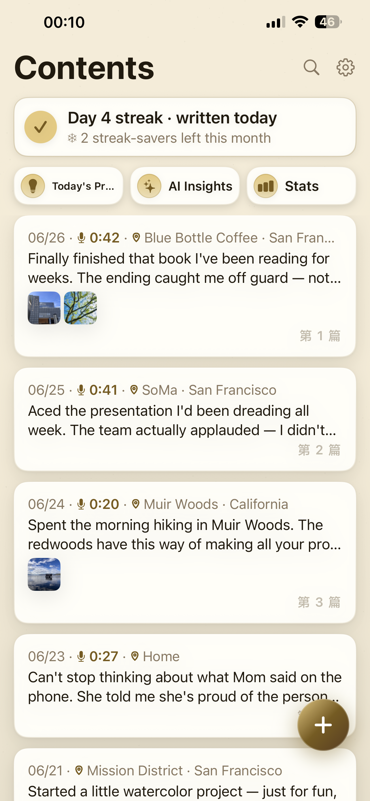

Now on the App Store · iOS
VoicePaper turns what you say into a private diary — transcribed on your device, page by page. Voice, photos, and mood, kept in one beautiful notebook.
翻开本子，对它说话——你说的话变成一篇私密日记，端侧转写、一页页翻阅。语音、照片、心情，都收在同一个精装本里。
Download on the App StoreiOS 17+ · No sign-up required · Audio stays on your phone

Just talk — your words become text in real time, transcribed right on your device.
Swipe left and right to flip between entries, like turning the pages of a real notebook.
Capture a whole day in one entry — and reread it later, with the voice still there.
On-device transcription and insights. Your audio is never uploaded to anyone.